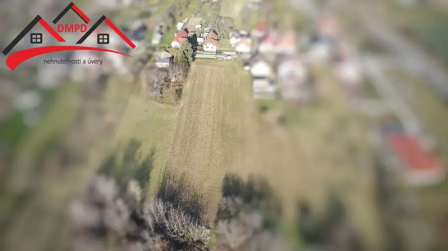
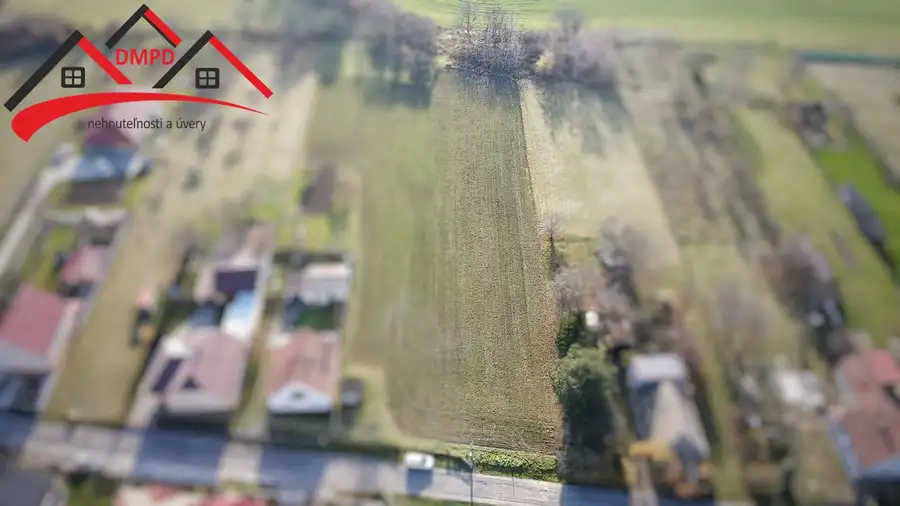
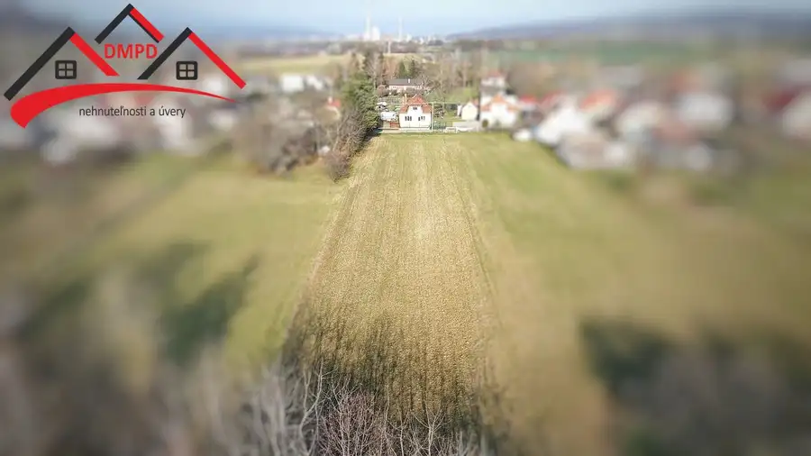
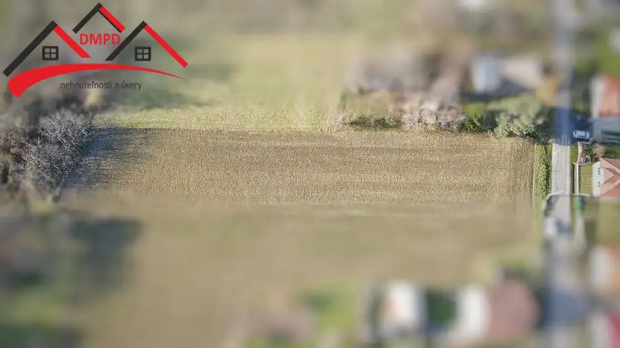
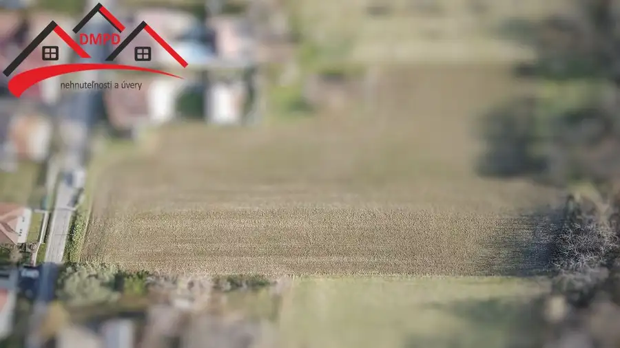
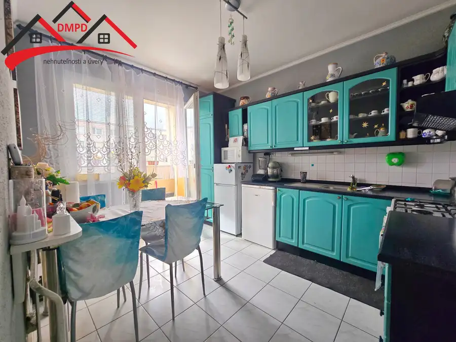
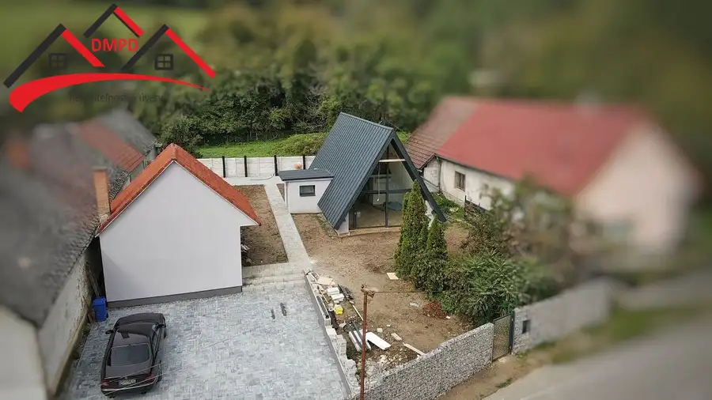
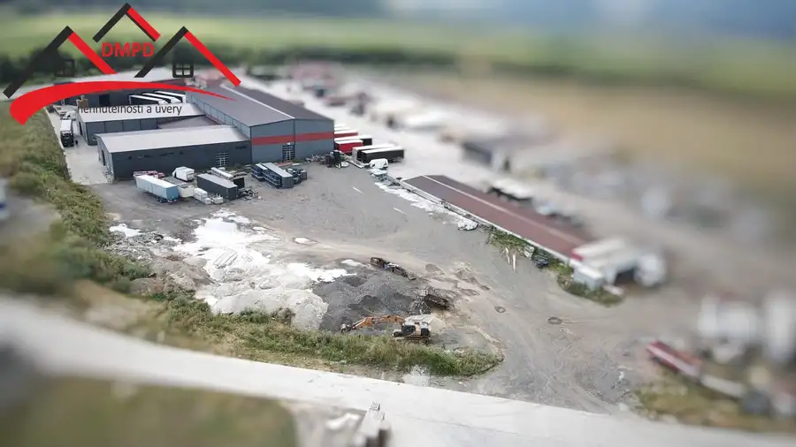

DMPD real Vám ponúka na predaj pozemok v obci Bystričany časť Vieska.
Bystričany





- Plocha2597 m²
O nehnuteľnosti
Ponúkame Vám jedinečnú príležitosť získať priestranný, slnečný a rovinatý pozemok s celkovou výmerou 2597 m² v obľúbenej a pokojnej časti obce Bystričany – Vieska. Táto lokalita sa dlhodobo vyznačuje stabilným záujmom kupujúcich, čo z nej robí ideálne miesto nielen na bývanie, ale aj na atraktívnu investíciu. Čo tento pozemok robí výnimočným? Perfektné umiestneniePozemok sa nachádza v tichej, málo frekventovanej ulici s dostatkom súkromia. Okolie tvorí príjemná rezidenčná zástavba a zeleň, ktorá vytvára harmonické prostredie pre rodinný život. Zároveň je v blízkosti kompletná občianska vybavenosť – školy, škôlka, obchody, lekár či služby sú len na skok.Veľkorysé rozmeryCelková výmera: 2597 m²Šírka pozemku: cca 18 mDĺžka pozemku: cca 140 mRovinatý charakter pozemku výrazne zjednodušuje budúcu výstavbu. Rozmery umožňujú široké možnosti – od výstavby jedného alebo viacerých rodinných domov, cez menší projekt až po investičné zhodnotenie do budúcnosti. Inžinierske siete pri pozemkuV bezprostrednej blízkosti pozemku sa nachádzajú všetky potrebné siete:vodaelektrinaplynTo znamená, že príprava na výstavbu bude technicky aj finančne menej náročná. Investičný potenciálVďaka svojej polohe, rozmerom a dostupnosti sietí má pozemok vysokú pridanú hodnotu. Je vhodný pre súkromného investora aj pre developera. Pozemky v tejto lokalite si dlhodobo držia hodnotu a dopyt v oblasti rastie. Cena - 51 €/m²Výborný pomer ceny a kvality v rámci celého regiónu. KontaktPre viac informácií, obhliadku alebo konzultáciu ma neváhajte kontaktovať: 0948 179 796 vida@dmpdreal.sk
Parametre
- Druh
- Pozemok pre rodinné domy
- Dátum zverejnenia
- 19. 11. 2025
- Dĺžka pozemku
- 140
- Elektrina
- Pri pozemku - 230 V
- Odpadové vody
- Nedostupné
- Plocha pozemku
- 2597 m²
- Plyn
- Pri pozemku
- Pripravenosť k výstavbe
- Predbežný súhlas
- Prístupová komunikácia
- Asfaltová
- Terén pozemku
- Rovinatý
- Typ
- Predaj
- Voda
- Pri pozemku - Verejný vodovod
- Šírka pozemku
- 18
Kde to je


Mohlo by Vás zaujímať

BytNové 124 000 €Ponúkame Vám na predaj 3- izbový byt ne sídlisku Sever v meste Prievidza. Prievidza 3-izbový70 m²4. podlažie
DomNové 225 000 €A-frame rodinný dom / chata vo Vyšehradnom – štýlový únik do prírody aj výborná investícia! Nitrianske Pravno 120 m²
PozemokNové Cena na vyžádáníDMPD REAL ponúka na predaj atraktívny investičný pozemok v priemyselnej zóne Nováky – pripravený na výstavbu. Nováky 6766 m²